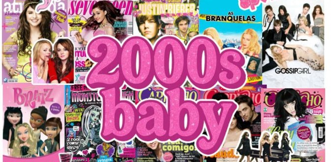

O início dos anos 2000 marcou uma revolução cultural impulsionada pelo fenómeno da música pop, pela estética futurista dos videoclipes e pela consolidação da cultura MTV. Entre calças de cintura baixa, telemóveis de abrir e o auge das boy bands e girl groups, esta década definiu tendências visuais e comportamentais que continuam a influenciar a moda e a cultura pop urbana até aos dias de hoje.
